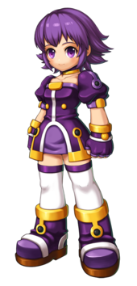

Informações Principais do Personagem
Nome: Arme Glenstid
Idade: 17 anos
Origem: Serdin
Hobbies: Colecionar objetos mágicos
Gostos: Estudar magia, cheiro de papel velho
Não Gosta: Ser tratada como uma criança
Fraquezas: Comida apimentada, estantes de livros muito altas

Alegre e ingênua, Arme é a principal maga da Grand Chase. Vinda de Serdin, o reino famoso por
seus magos e pela Academia de Magia Violeta. Arme tem uma personalidade mais infantil e
inocente, que esconde o grande poder que ela carrega. Arme demonstra grande interesse pela
magia, e adora estudar sobre o assunto. Ela acredita que essa força deve ser usada apenas para o
bem e não medirá esforços para impedir que as forças das trevas abusem do poder da magia.
Ela nasceu com um enorme poder mágico e abandonada por seus pais, que temiam a tal poder.
Ela foi abandonada em frente a porta da Academia de Magia Violeta, e o Serre, o diretor da academia, a trouxe e a criou, sendo avô adotivo de arme.
Ela nasceu com um enorme poder mágico e abandonada por seus pais, que temiam a tal poder.
Ela foi abandonada em frente a porta da Academia de Magia Violeta, e o Serre, o diretor da academia, a trouxe e a criou, sendo avô adotivo de arme.
Virgem de emoções sensíveis e anseio por coisas desconhecidas. Ela trabalha muito e é uma mulher
de espírito, e também é um tanto impulsiva e fora da parede.
Ela ama magia e estuda duro, mas ela é uma maga nascido adquirindo magia negra e magia branca ao mesmo tempo.
Ela gosta de encontrar documentos antigos relevantes para a magia, novo espírito, as coisas ou os minerais que a magia habita.
Arme é a mais jovem dos três membros iniciais do Grand Chase. Às vezes, ela parece infantil e imatura, mas ela tem coragem para enfrentar inimigos enormes.
Ela ama magia e estuda duro, mas ela é uma maga nascido adquirindo magia negra e magia branca ao mesmo tempo.
Ela gosta de encontrar documentos antigos relevantes para a magia, novo espírito, as coisas ou os minerais que a magia habita.
Arme é a mais jovem dos três membros iniciais do Grand Chase. Às vezes, ela parece infantil e imatura, mas ela tem coragem para enfrentar inimigos enormes.
Classes

Maga
Arma: Cetro
Alquimista
Arma: Pote
Feiticeira
Arma: Lâmpada
Arquimaga
Arma: Cajado
Habilidade especial
Meditação
Quando as classes da Arme ficam paradas por alguns segundos, elas regenerarão o seu MP dizendo "Espíritos do fogo, água e terra, me deem forças!"Com a Arquimaga, ela não pode usar a Meditação quando está no Fatal porque ela precisa se "apoiar" no cajado quando está assim.